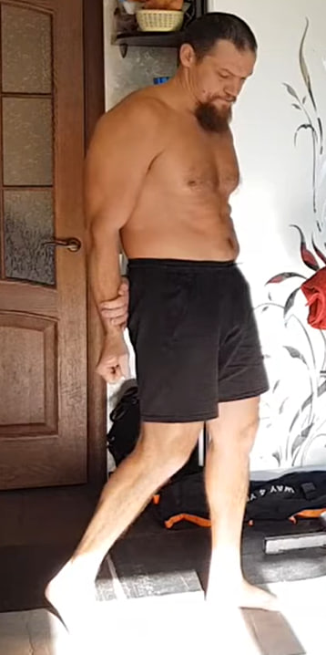

Día 24: isometría y control + agarre y antebrazos (sin equipo)
Hoy trabajamos isometría y control, agarre y antebrazos, empuje (pecho, hombros y tríceps) con ejercicios simples que caben en una habitación. El objetivo es construir fuerza útil, resistencia y control corporal con el mínimo de equipo.
Prioriza la técnica, respira con control y acumula consistencia: incluso una sesión corta suma cuando la repites día tras día.
1. Isometría del deltoides anterior — 10×10 s por lado
Antes de empezar: haz el calentamiento y repasa la respiración. (No lo saltes.)
Protocolo isométrico: tensión: 12 s + descanso: hasta recuperar la respiración × 10 repeticiones (por lado, si aplica). Más detalles: Respiración.

Colócate de pie con una pierna adelantada para mayor estabilidad y el brazo de trabajo ligeramente flexionado frente al cuerpo. Con la mano contraria sujeta el antebrazo o la muñeca del brazo de trabajo creando un bloqueo firme.
El brazo de trabajo intenta salir hacia adelante y ligeramente hacia arriba, mientras la mano de apoyo no le permite avanzar ni un milímetro. La tensión debe concentrarse en el deltoides anterior (parte frontal del hombro).
Ejecución: 10 repeticiones por cada lado.
2. Rotura en tres puntos con toalla (3-6-3) — 10 ciclos


Usa una toalla o cinta que no se estire. Enrolla en las muñecas dejando aprox. 46 cm entre manos. Trabaja en tres posiciones: (1) delante del cuerpo, (2) sobre la cabeza, (3) detrás de la espalda. En cada punto: 3 s para entrar en tensión, 6 s de máxima fuerza (como si quisieras romperla), 3 s para soltar.
Ejecución: 10 ciclos (en cada uno pasas por los 3 puntos).
3. Flexiones — 1×10

Colócate en plancha con el cuerpo firme. Baja con control y sube fuerte. Termina arriba sin bloquear completamente los codos.
Ejecución: 1 serie de 10 repeticiones.
4. Isometría del deltoides anterior — 2×10 por lado (10 s)
Protocolo isométrico: tensión: 12 s + descanso: hasta recuperar la respiración × 10 repeticiones (por lado, si aplica). Más detalles: Respiración.

Misma técnica que en el ejercicio 1: bloqueo firme con la mano contraria y empuje hacia adelante/ligeramente hacia arriba sin movimiento visible. Ejecución: 2 series de 10 repeticiones por cada lado. Misma técnica que en el ejercicio 1: bloqueo firme con la mano contraria y empuje hacia adelante/ligeramente hacia arriba sin movimiento visible. Ejecución: 2 series de 10 repeticiones por cada lado.
5. Rotura en tres puntos con toalla (3-6-3) — 15 ciclos


Misma técnica del ejercicio 2 (tres posiciones, 3-6-3). Mantén el esfuerzo máximo en la fase de 6 segundos. Ejecución: 15 ciclos (cada ciclo = 3 puntos). Misma técnica del ejercicio 2 (tres posiciones, 3-6-3). Mantén el esfuerzo máximo en la fase de 6 segundos. Ejecución: 15 ciclos (cada ciclo = 3 puntos).
6. Flexiones — 2×10

Plancha firme, descenso controlado y subida potente. Termina arriba sin bloquear completamente los codos.
Ejecución: 2 series de 10 repeticiones.
7. Isometría del deltoides anterior — 3×10 por lado (10 s)
Protocolo isométrico: tensión: 12 s + descanso: hasta recuperar la respiración × 10 repeticiones (por lado, si aplica). Más detalles: Respiración.

Misma técnica del ejercicio 1. Ejecución: 3 series de 10 repeticiones por cada lado. Misma técnica del ejercicio 1. Ejecución: 3 series de 10 repeticiones por cada lado.
8. Rotura en tres puntos con toalla (3-6-3) — 20 ciclos


Misma técnica (tres posiciones, 3-6-3). Mantén la forma y aprieta al máximo en cada ciclo.
Ejecución: 20 ciclos (cada ciclo = 3 puntos).
9. Flexiones — 2×10

Plancha firme, descenso controlado y subida potente. Termina arriba sin bloquear completamente los codos.
Ejecución: 2 series de 10 repeticiones.
Bloque final — al máximo (hasta el agotamiento)
Protocolo isométrico: tensión: 12 s + descanso: hasta recuperar la respiración × 10 repeticiones (por lado, si aplica). Más detalles: Respiración.
Después del ejercicio 9, repite estos 3 ejercicios a máxima intensidad, hasta el agotamiento. Mantén el esquema de 10 segundos por repetición y haz tantas repeticiones como puedas (por cada lado) sin perder la tensión. Mantén el esquema 3-6-3 y haz tantos ciclos como puedas, pasando por los 3 puntos en cada ciclo. Haz una serie a máximo número de repeticiones con técnica limpia (sin bloquear completamente los codos). Después del ejercicio 9, repite estos 3 ejercicios a máxima intensidad, hasta el agotamiento. Mantén el esquema de 10 segundos por repetición y haz tantas repeticiones como puedas (por cada lado) sin perder la tensión. Mantén el esquema 3-6-3 y haz tantos ciclos como puedas, pasando por los 3 puntos en cada ciclo. Haz una serie a máximo número de repeticiones con técnica limpia (sin bloquear completamente los codos).
10. Isometría del deltoides anterior — al máximo
11. Rotura en tres puntos (3-6-3) — al máximo
12. Flexiones — al máximo
Cierre
Experimenta: ajusta ángulos, rango y puntos de tensión hasta encontrar la versión que te sienta bien. Lo importante es que el entrenamiento sea sostenible y te dé ganas de volver. Crea condiciones para entrenar con regularidad, aunque sea poco: 10 minutos cuentan. Esta rutina está pensada para eso: que puedas cumplir incluso con poco espacio, poco tiempo y circunstancias difíciles.